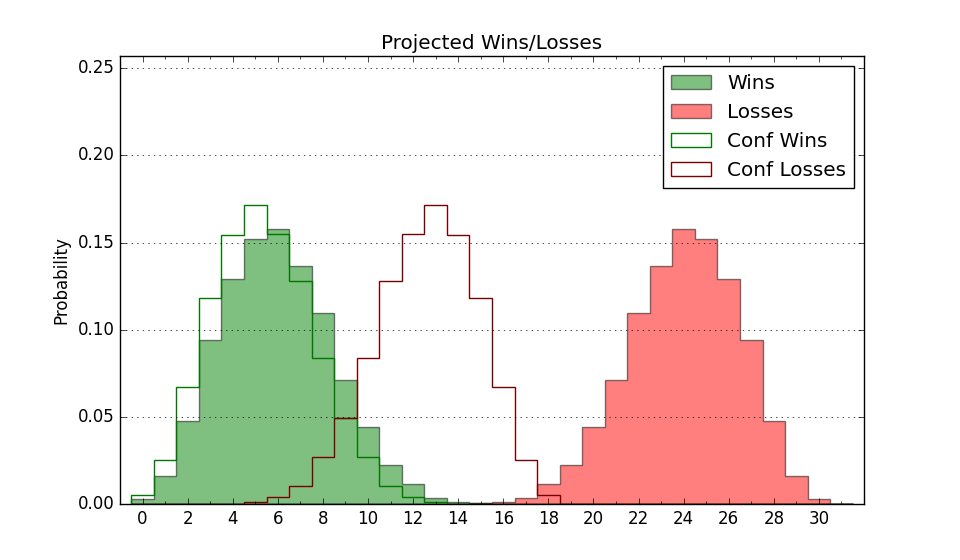

0-10 (Overall)
Net: -20.0 (341st)
Off: 90.8 (348th)
Def: 110.9 (283rd)
SoR: 0.0 (235th)
| Home | Game Probabilities | Conferences | Preseason Predictions | Odds Charts | NCAA Tournament |
| City: | Carrollton, Georgia | |
| Conference: | Atlantic Sun (1st)
| |
| Record: | 0-0 (Conf) 0-10 (Overall) | |
| Ratings: | Comp.: -17.4 (341st) Net: -20.0 (341st) Off: 90.8 (348th) Def: 110.9 (283rd) SoR: 0.0 (235th) |
| Remaining | ||||||
|---|---|---|---|---|---|---|
| Date | Opponent | Win Prob | Pred. | |||
| 12/7 | Tennessee Tech (269) | 47.9% | L 69-70 | |||
| 12/17 | @ Charlotte (192) | 11.8% | L 61-74 | |||
| 1/2 | Florida Gulf Coast (134) | 22.5% | L 63-71 | |||
| 1/4 | Stetson (325) | 60.3% | W 75-72 | |||
| 1/9 | @ Austin Peay (245) | 17.5% | L 61-72 | |||
| 1/11 | @ Lipscomb (115) | 5.9% | L 60-79 | |||
| 1/16 | @ Florida Gulf Coast (134) | 7.8% | L 59-75 | |||
| 1/18 | @ Stetson (325) | 30.9% | L 70-76 | |||
| 1/23 | Jacksonville (207) | 34.1% | L 68-72 | |||
| 1/25 | North Florida (163) | 27.2% | L 75-82 | |||
| 1/29 | @ Central Arkansas (337) | 33.4% | L 66-71 | |||
| 2/1 | @ Queens (284) | 23.3% | L 67-76 | |||
| 2/5 | Lipscomb (115) | 17.5% | L 64-75 | |||
| 2/8 | North Alabama (190) | 30.5% | L 68-74 | |||
| 2/13 | @ Eastern Kentucky (158) | 9.6% | L 66-81 | |||
| 2/15 | @ Bellarmine (316) | 29.7% | L 70-76 | |||
| 2/18 | @ North Alabama (190) | 11.4% | L 64-78 | |||
| 2/20 | Central Arkansas (337) | 63.0% | W 71-67 | |||
| 2/24 | Queens (284) | 50.9% | W 72-71 | |||
| 2/26 | Austin Peay (245) | 41.9% | L 66-68 | |||
| Previous | Game Score | |||||
| Date | Opponent | Win Prob | Result | Off | Def | Net |
| 11/4 | @Mississippi St. (18) | 0.8% | L 60-95 | 0.6 | -2.7 | -2.0 |
| 11/6 | @Georgia Tech (104) | 5.3% | L 62-85 | -4.4 | 6.0 | 1.6 |
| 11/12 | @Tennessee Tech (269) | 21.2% | L 73-76 | -0.2 | 3.8 | 3.7 |
| 11/15 | @South Florida (176) | 10.5% | L 55-74 | -9.7 | 3.6 | -6.1 |
| 11/19 | Troy (123) | 19.6% | L 65-84 | 4.5 | -29.2 | -24.7 |
| 11/23 | @Georgia Southern (257) | 19.1% | L 54-64 | -19.1 | 23.0 | 3.9 |
| 11/26 | (N) Utah Valley (156) | 16.2% | L 74-77 | 14.3 | -2.3 | 12.1 |
| 11/27 | (N) North Dakota St. (162) | 16.7% | L 61-73 | -11.4 | 1.6 | -9.9 |
| 11/29 | @Samford (130) | 7.4% | L 65-86 | 1.0 | -1.7 | -0.6 |
| 12/4 | @Mercer (237) | 16.7% | L 72-86 | 9.8 | -23.7 | -13.9 |
| Stats & Trends | |||||
|---|---|---|---|---|---|
| Current | Day | Week | Month | Season | |
| Composite | -17.4 | -0.9 | -2.0 | -7.4 | -7.4 |
| Comp Rank | 341 | -4 | -16 | -74 | -74 |
| Net Efficiency | -20.0 | -0.6 | -1.7 | -- | -- |
| Net Rank | 341 | -6 | -15 | -- | -- |
| Off Efficiency | 90.8 | +1.3 | +0.7 | -- | -- |
| Off Rank | 348 | +1 | -5 | -- | -- |
| Def Efficiency | 110.9 | -1.9 | -2.4 | -- | -- |
| Def Rank | 283 | -25 | -34 | -- | -- |
| SoS Rank | 74 | -- | +5 | -- | -- |
| Exp. Wins | 6.0 | -0.6 | -1.0 | -6.2 | -6.2 |
| Exp. Conf Wins | 5.4 | -0.4 | -0.7 | -3.3 | -3.3 |
| Conf Champ Prob | 0.1 | -0.1 | -0.3 | -5.4 | -5.4 |

| Advanced Stats | ||
|---|---|---|
| Stat | Value | Rank |
| Off Eff FG % | 0.444 | 326 |
| Off Ast Ratio | 0.130 | 247 |
| Off ORB% | 0.250 | 257 |
| Off TO Rate | 0.157 | 228 |
| Off FT Ratio | 0.227 | 353 |
| Def Eff FG % | 0.552 | 312 |
| Def Ast Ratio | 0.169 | 325 |
| Def ORB% | 0.291 | 209 |
| Def TO Rate | 0.140 | 221 |
| Def FT Ratio | 0.347 | 198 |